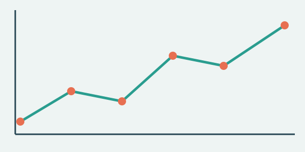

Data Visualization

Data visualization is something I've been learning more about through my DS4200 class at Northeastern. Before taking this course, I mostly thought of charts and graphs as ways to present information, but I've started to realize there's a lot more to it.
What I find interesting is how the same dataset can tell completely different stories depending on how it's presented. Something as simple as changing the colors, choosing a different chart type, or adjusting the scale can make information much easier or harder to understand.
I've also been learning about different tools for creating visualizations, including Altair and D3.js. While I'm still getting familiar with them, I like being able to turn raw data into something interactive instead of just looking at numbers in a spreadsheet.
One thing I've noticed is that making a good visualization isn't necessarily about making it look impressive. It's more about helping people understand the information without having to think too hard about what they're looking at.
Outside of class, I can see how these skills could be useful in areas like finance, sports, and business, where people rely on data to make decisions. I think being able to communicate information clearly is just as important as knowing how to analyze it.
What I've Been Learning About
- How color choices affect the way people read a chart
- Picking the right chart type for the question being asked
- How scales and axes can change the story a chart tells
- Building interactive visualizations with Altair and D3.js
A Simple Interactive Visualization
Below is a basic interactive bar chart showing how I spend my free time during a typical week. It's not based on any official dataset, just some example numbers I put together to practice using D3.js.
The chart shows how many hours I spend on different activities, including playing sports, cooking, gaming, and watching shows. You can hover over each bar to see the exact number of hours.